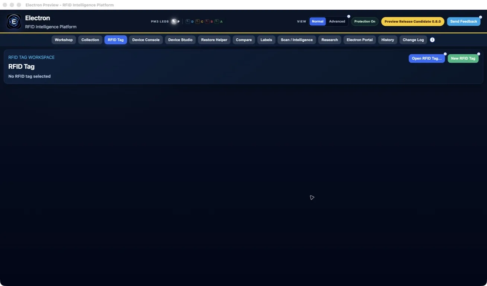
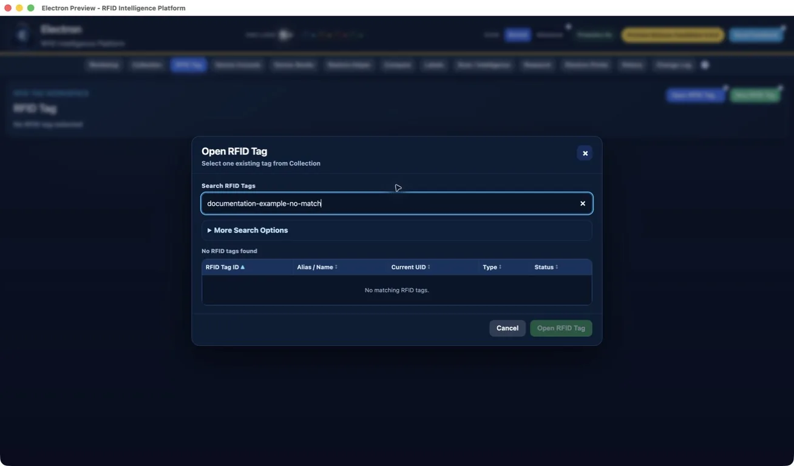

Electron Public Preview 1 Quick Start
Use these steps to make your first safe scan.
For installation and macOS security guidance, first read the official Download and Installation Guide.
1. Check the requirements
You need:
- the approved Electron Public Preview package supplied to you;
- a compatible Proxmark3 and USB cable;
- the supported PM3 client and firmware supplied or identified for that build;
- permission to test the RFID item;
- an independent backup of any important Electron data.
The current release process has been validated primarily on macOS with Apple Silicon. Platform support for your package should be confirmed by the Preview coordinator.
2. Install and start Electron
Follow the instructions supplied with your Preview package. Early Public Preview 1 is distributed without Apple Developer ID signing or Apple notarization.
macOS may show an unidentified-developer or verification message. Use only Apple's normal Open or Open Anyway workflow after confirming the official source and SHA-256. Do not disable operating-system security.
3. Connect the Proxmark3
Connect the Proxmark3 directly by USB. Close other programs that may be using the same serial device.
Open Device Console and select Check Device. If the USB device is detected but the session is not connected, select Connect Device.

The status card separates:
- USB device — whether the computer can see the device;
- Active session — whether Electron can communicate with it;
- Diagnostics — whether current measurements are available.
4. Run a first safe scan
Open Workshop, choose Card Lab, place one authorised card or tag on the reader and select Quick Scan.

Keep the item steady until the workflow finishes. The progress panel shows the current read-only command and completed steps.
5. Review the result
Read the Card Lab explanation, then open Card Viewer for the stored read details. A value shown as Unknown was not supported by the available evidence.
Do not treat a suggested card family or inferred value as chip-reported fact.
6. Save or open an RFID Tag
Open RFID Tag. The workspace starts without a selected record.

- Select New RFID Tag to create a record.
- Select Open RFID Tag... to use an existing Collection record.
- Search by RFID Tag ID or Alias / Name, select one result and choose Open.

7. Get help or send feedback
Use the information buttons beside controls for contextual help. Select Send Feedback in the application header to prepare a local feedback package.
Include:
- what you tried;
- what you expected and what happened;
- the Electron version;
- connection and firmware information when relevant;
- a screenshot only after checking it for private data.
Electron does not automatically upload the package. Inspect it first, then share it through the official Preview support channel if you choose.
Continue through the Documentation page, or use Support if something does not work as expected.